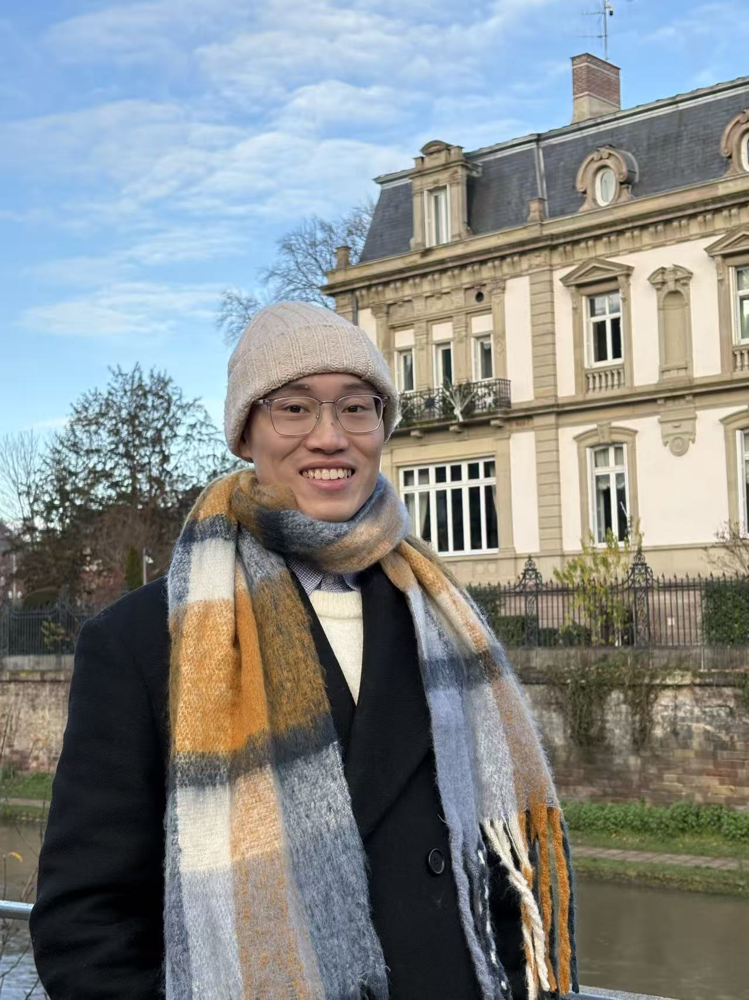

HKUST, Hong Kong SAR, China
I am a Ph.D. candidate in the Department of Electronic and Computer Engineering at the Hong Kong University of Science and Technology (HKUST), working under the guidance of Prof. Jun Zhang. I am also fortunate to work closely with Prof. Zili Meng. Prior to that, I received my Bachelor’s degree in Communication Engineering from the Southern University of Science and Technology (SUSTech) in 2023, under the supervision of Prof. Rui Wang.
My research focuses on wireless communication systems (5G/Wi-Fi), real-time audio/video communications (RTC), and embedded network stacks. I build and validate real-world systems, with a cross-layer perspective spanning the wireless physical layer, protocol stacks, and applications.
I am on track to complete my Ph.D. in August 2027 and am currently looking for job opportunities. If my experience in wireless systems, RTC, or embedded development matches what your team is looking for, or if you would like to exchange ideas and explore potential collaborations, please don’t hesitate to drop me an email.
Selected Projects
- Built an srsRAN-based end-to-end 5G system (5GC, gNB, and UE), carrying a WebRTC-based live streaming system with 1080p/30 FPS video.
- Proposed a physical-layer-assisted congestion-control mechanism that achieves 99.9th-percentile latency below 100 ms over fluctuating wireless networks.
- The resulting paper is accepted by IEEE TMC.
- Part of the Hong Kong Areas of Excellence (AoE) scheme 6G@HK.
- Built an AI glasses prototype with STM32, ESP32, and Zephyr OS, supporting camera, display, and Wi-Fi.
- Proposed SPI full-duplex communication and retransmission mechanisms that cut interaction latency by up to 50%.
- Achieved real-time interaction latency around 60 ms.
- Designed a unified SDK enabling applications to be developed once and deployed across Rokid, RayNeo, Meta, and INMO smart glasses.
- Developed sample apps including a teleprompter and real-time translation.
- The demos received media coverage from CNN, QbitAI, and Vista Story.
- Presented as a poster at ACM HotMobile 2026 with a live demo.
Selected Publications
-
IEEE Transactions on Mobile Computing (TMC), 2026
-
In USENIX Symposium on Networked Systems Design and Implementation (NSDI), 2026
-
In International Workshop on Mobile Computing Systems and Applications (HotMobile), 2026
-
IEEE Transactions on Mobile Computing (TMC), under minor revision
-
IEEE Transactions on Wireless Communications (TWC), 2024
* Equal contribution.